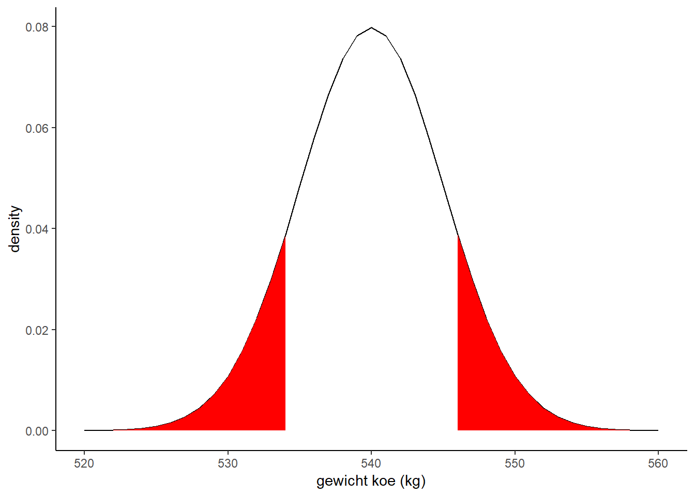

Hypotheses toetsen
Een boer vermoedt dat zijn koeien lichter zijn dan de gemiddelde Holsteiner-Friesian. Hij zet een koe op de weegschaal, en leest 535 kg af.
Opdracht 12 Koe, deel 3
- Bereken m.b.v. pnorm() hoe waarschijnlijk het is dat je een koe hebt die 535 kg of minder weegt bij een populatiegemiddelde van 540 kg en standaarddeviatie van 5 kg.
Bovenstaande opgave is de essentie van een statistische toets. Je stelt een nulhypothese op:
Het gewicht van de koeien van de boer wijkt niet af van het gewicht van Holstein-Friesian koeien.
Blijkt je steekproef heel onwaarschijnlijk te zijn onder de nulhypothese, dan verwerp je deze, en neem je de alternatieve hypothese aan. In dit geval gaat het om een eenzijdige toets (de boer denkt dat zijn koeien lichter zijn).
In het geval dat de boer vermoedt dat het gewicht afwijkt van Holstein-Friesians, dan hebben we het over een tweezijdige toets. De kans op een minstens zo grote afwijking als gevonden kan twee kanten op zijn:
- lichter dan 535 kg
- zwaarder dan 545 kg
Hieronder is die kans geïllustreerd:

Je ziet dus dat als je tweezijdig toetst, de waarschijnlijk dat minstens zo’n grote afwijking voorkomt, twee keer zo groot is dan als je eenzijdig toetst.
De boer slaat er zijn statistiekaantekeningen op na, en komt tot de conclusie dat hij een grotere steekproef moet nemen. Hij zet 6 koeien op een weegbrug en leest 3216 kg af, dus het steekproefgemiddelde is 536 kg.
Opdracht 13 Koe, deel 4
- De standaarddeviatie voor het gewicht van één Holstein-Friesiankoe is 5 kg. Wat wordt de standaarddeviatie voor een steekproef van 6 koeien?
- Bereken, met deze standaarddeviatie de waarschijnlijk van maximaal een gemiddeld gewicht van 536 als de nulhypothese waar is?
- Bereken de waarschijnlijkheid als je tweezijdig toetst.